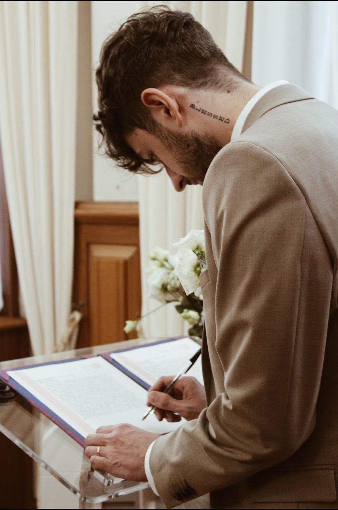

Dorian Cateine

Summary
I'm a 21-year-old recent graduate in international economics and
management, and a self-taught web developer. My skill set is a blend of
technical knowledge as well as interpersonal skills. My technical
expertise involves HTML, CSS, and JavaScript. My people skills include
problem solving and collaborating well in teams.
I am seeking opportunities where I can utilize my existing knowledge for
the betterment of the organization as well as learn new skills to enhance
my potential and flourish myself professionally.
Education
Bachelor's degree in economics and management (2020-2023)
- School : University of Lille
- Location : Lille, France
-
Specialization : International Economics and Management
Work Experience
Production Operator - Recytech S.A.
Summer 2021 / Summer 2022 / April 2023 - present
-
Responsible for overseeing production operations and maintaining a
steady supply to the production line
-
Required strong communication skills to collaborate with colleagues
and address challenges.
-
Demonstrated adaptability and problem-solving in a team environment.
-
Developed skills in communication, teamwork, adaptability,
problem-solving, and taking initiative.
Versatile Salesperson / Barista - Notting Hill Coffee
September 2022 - January 2023
-
Proactive nature and sales passion led to excellence in customer
relations, anticipating needs, and providing tailored recommendations.
-
Developed and showcased essential qualities like teamwork,
adaptability, initiative, and expertise in sales and customer
relations.
-
Focusing on customer relations, order preparation, maintaining a clean
environment, and store operations.
Skills
- Soft skills :
- Team Collaboration
- Problem Solving
- Communication
- Project Management
- Leadership
- Hard skills :
Languages
- French (mother tongue)
- English (fluent)
- Turkish (basic)
Hobbies
- Travelling
- Cooking
- Sports
Contact